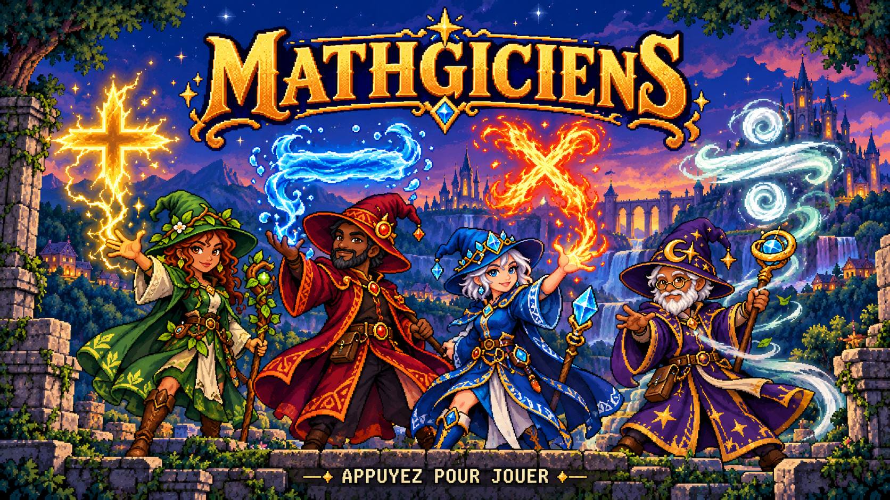

Jeux éducatifs
 Mathgiciens
Mathgiciens
Incarnez des mathgiciens, et utilisez vos pouvoirs mathématiques pour défendre le royaume, seul ou en coopération.
La magie du calcul mental


Combinez des nombres et des opérations pour lancer des sorts et repousser les créatures qui menacent le royaume.
Jouez seul ou unissez vos pouvoirs en coopération locale, sur ordinateur ou sur deux à quatre appareils Android connectés au même Wi-Fi.

Quatre mondes à explorer, des boss à affronter et huit avatars à découvrir. Jouez hors ligne ; la coopération Android utilise votre réseau local.
Téléchargements
Windows 10/11 64 bits : jouez seul ou à deux ou trois sur le même PC, au clavier/souris et avec jusqu’à deux manettes. Installez l’application, puis lancez-la depuis son raccourci.
Télécharger l’installeur Windows 0.5.1 · 139 Mio
Android 8 ou plus récent, appareils ARM 32 ou 64 bits. Solo sans connexion ; coop sur le même Wi-Fi, sans ordinateur ni serveur Internet. Installez la version 0.5.4 sur tous les appareils, gardez les applications ouvertes et choisissez le nombre de joueurs lors de la création de la salle.
Télécharger l’APK Android 0.5.4 · 183,5 Mio
Jouer en coopération sur Android
Un appareil crée la salle ; les autres la sélectionnent et saisissent son code à deux chiffres. Choisissez vos mages, puis validez « Je suis prêt ». Vous pouvez aussi connecter les appareils au point d’accès Android de l’hôte.
Les fichiers disponibles sont en cours de chargement.
Versions précédentes
Téléchargez l’APK sur votre appareil Android, puis ouvrez-le pour lancer l’installation. Android peut demander d’autoriser l’installation depuis votre navigateur.
Notes de version et empreintes SHA256 sur GitHub : Windows 0.5.1 → · Android 0.5.4 →
Le moteur GeckoView de Mozilla est intégré pour fonctionner aussi sur les appareils dont le navigateur système est ancien. Code source du moteur · Licence MPL 2.0.
Nouveautés
Android 0.5.4
- Quatre rythmes : Novice, Apprenti, Mathgicien et Maître, avec une présentation colorée.
- Des aides personnelles : « Pas de blocage » et « Moins d’ennemis », qui réduit d’environ 35 % les ennemis dans les colonnes du joueur concerné, avec arrondi à l’ennemi entier. Les autres colonnes et les boss restent inchangés.
- Des préparatifs élargis sur tablette et compacts sur téléphone, avec les icônes des écoles et des runes.
- Fusion utilise les boutons d’opération du grimoire : deux cartes entourées d’éclairs bleus fusionnent en une nouvelle carte.
- Une pause coop avec le nom du joueur et un écran légèrement grisé. Seul l’auteur de la pause peut reprendre la partie.
Android 0.5.3
- Un nouveau rythme Débutant, encore plus lent que Facile.
- Des runes de pouvoir au choix : Fusion, Carré, Moitié et Double. Un emplacement après le monde 1, un second après le monde 3 ; équipement modifiable aux préparatifs.
- Fusion combine deux cartes avec une opération. Moitié fonctionne avec les nombres pairs. Chaque rune se recharge quand sa carte créée sert à un sort réussi.
- Des choix de runes personnels en coopération, accessibles aussi au retour sur la carte.
- Des préparatifs coop plus compacts sur téléphone, le zoom désactivé et l’éclair retiré sous le + du menu.
Android 0.5.2
- Trois rythmes : Facile, Normal et Difficile. Le mode Facile ralentit les ennemis et leurs arrivées.
- Une option personnelle « Pas de blocage » permet de répéter une opération ; la fatigue de chacun apparaît près de son portrait.
- Une carte agrandie monde par monde sur téléphone, avec quatre boutons de navigation ; la carte complète reste visible sur tablette.
- Une coopération plus résistante aux coupures réseau, avec reprise automatique après une pause liée à la connexion.
- Des personnages affichés en entier dans l’animation d’accueil.
Windows 0.5.1 et les améliorations récentes
- Une aventure en quatre mondes : préparatifs, étapes courtes, retour à la carte et défis infinis débloqués après les boss.
- Des niveaux accessibles aux couleurs de leur monde et des niveaux verrouillés en gris.
- Une validation « Je suis prêt » avant de lancer une étape en coopération.
- Des groupes d’ennemis différents mais équilibrés pour chaque joueur, des arrivées décalées et des boss adaptés au nombre de joueurs.
- Des sorts d’Air pour aider l’équipe : piocher une carte, récupérer de la fatigue ou repousser tous les ennemis.
- Quatre avatars disponibles dès le départ et quatre autres à débloquer en terminant les niveaux.